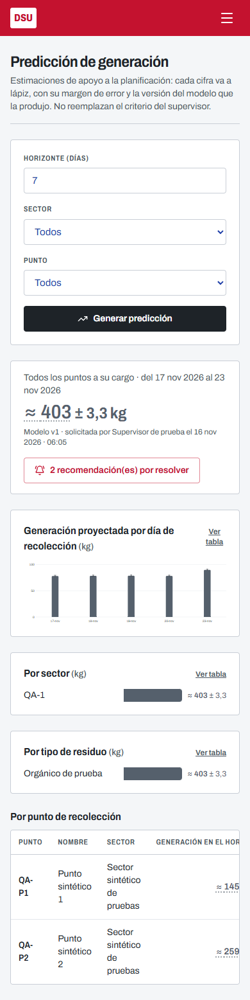

DSU
Dirección de Servicios Universitarios
Universidad Autónoma Gabriel René Moreno
Campus limpio, gestión inteligente
Cada vaciado queda registrado en el punto de recolección. Con esos datos la DSU planifica sus rutas y se anticipa a los desbordes.
En campo
El personal operativo anota tipo y cantidad desde su celular: 12,5 kg, en cuatro toques.
Supervisión
El supervisor arma la jornada, asigna la cuadrilla y sigue el recorrido en el mapa.
Predicción
El modelo estima los próximos siete días, siempre con su margen: ≈ 403 ± 3,3 kg.
